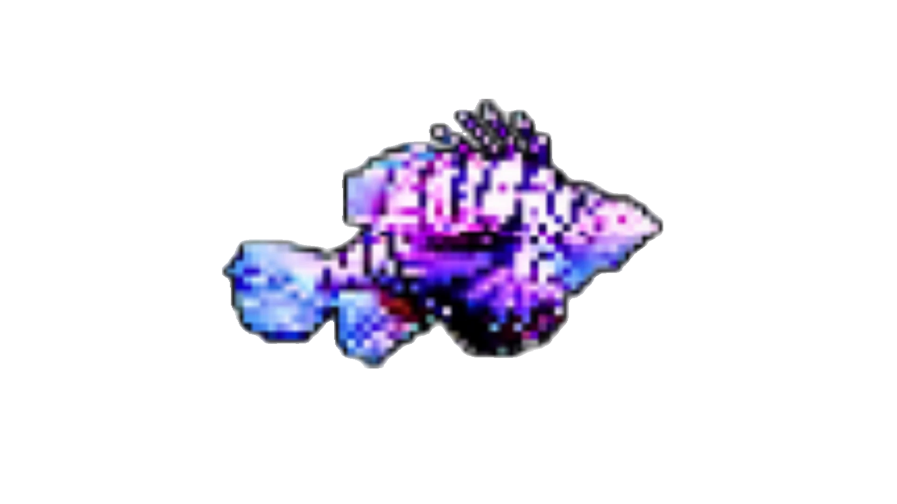
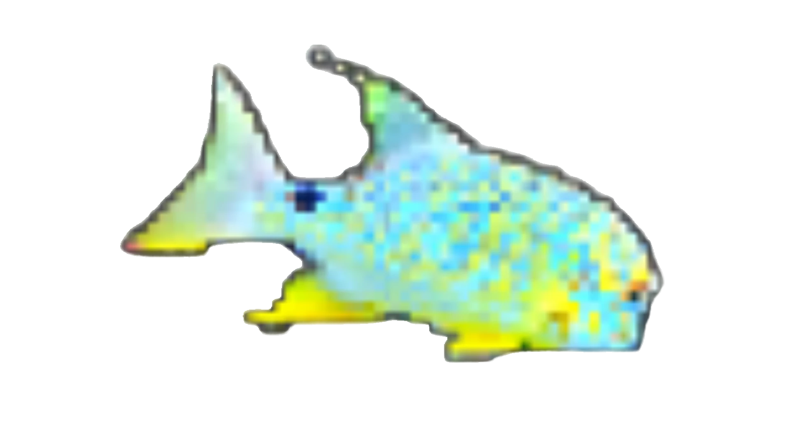
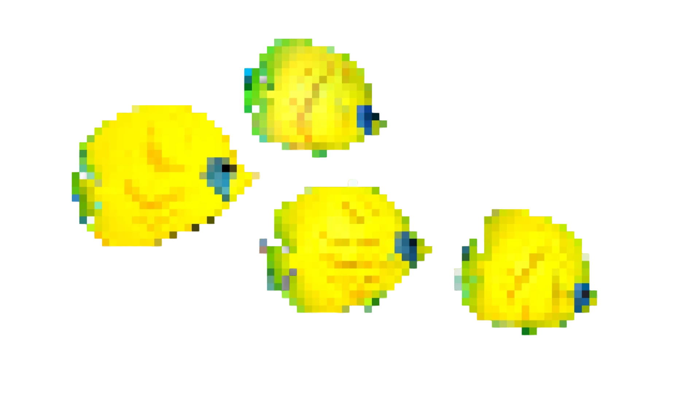
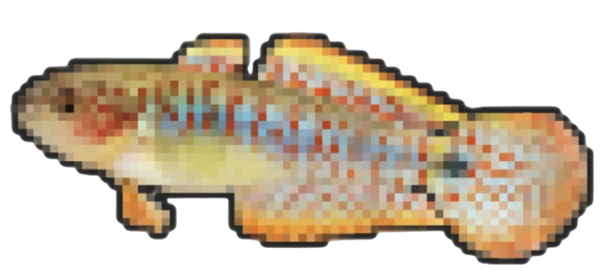
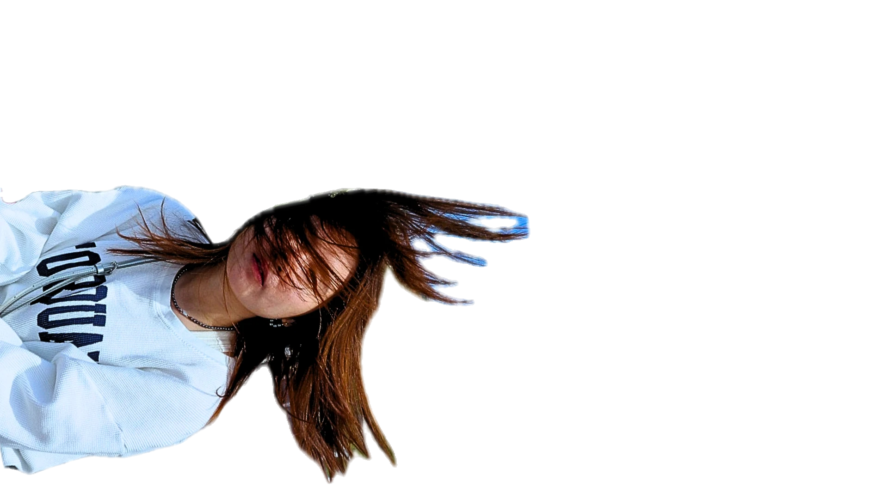

Motion design

Production

Graphic & art

Interfaces

3D

About
![[THAY HÌNH NV Ở ĐÂY]](assets/works/legs.png)




Motion Designer · RMIT Student
Hi, mình là An — mình xây thế giới từ những giấc mơ, những vòng lặp ký ức, và những thứ trông gần như bình thường cho tới khi không còn bình thường nữa. Mình làm việc giữa animation 2D, phim thử nghiệm và thiết kế tư biện (speculative design), thường xoay quanh nỗi hoài niệm, cảm giác "uncanny", và những cảm xúc quá tải trong yên lặng.
Based in Vietnam.
